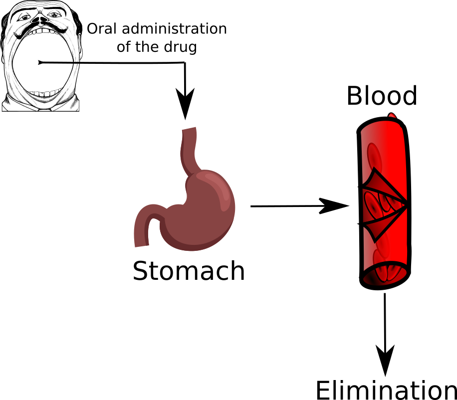

Modeling evolutionary problems
Contents
Modeling evolutionary problems#
One of the ways in which mathematics is used to translate experimental measurements into an understanding of the underlying regulating mechanisms is represented by ordinary differential equations. Indeed if we consider the values of variables these do not provide themselves insight on the underlying phenomena we want to describe. The fundamental insight is that is the change in the magnitude of a variable as a function of time that is the important quantity. These changes can be often be described in terms of differential equations.
The first class of problems we will address in this course is then their numerical solution with MATLAB. To arrive at this we will start by (quickly) recalling the mathematical background.
Ordinary differential equations#
Let us suppose that we have a variable \(x\) that depends on time \(t\), we can represent its evolution on a graph
There are intervals during which \(x\) increases and others during which it decreases. We can denote the slope of the change as
when we define it in this way, the slope is a function of the selected interval. We are the interested in what happens as we let the time interval decrease by approaching zero, i.e., \(\Delta t \rightarrow 0\),
that is, we are interested in its derivative. Specifically, we are interested in making predictions about phenomena that are subject to change, e.g.,
the rate at which the food supply for a given specie is related to the growth of its population,
the variation of a drug concentration in an organ,
the rate of decay of a radioactive substance.
Thus we are particularly interested in equations that tell us how this rate at which a given quantity changes when it is related to some function of the quantity itself. In mathematical terms these are equations of the form
These type of equations are called ordinary differential equations. Their solution cannot be determined uniquely without employing some outside condition. This is typically an initial value, e.g., the quantity of radioactive material at the beginning of the decay or the number of members of our population.
There is a very rich mathematical theory behind these objects that is involved in
having strategies useful for the development of models of physical phenomena;
discovering whether the model we (or our friendly neighborhood mathematician ) have just devised is well-posed ( are there solutions? are these unique? do the solutions correspond to the phenomenon we were modeling?);
But don‚Äôt worry, what we are interested in here is using MATLAB to investigate them, and approximate their solution üëç. So we will assume that you have got your ODE from a good dealer, and avoid investigating the theory.
We will start from an example doing the whole analysis from top to bottom, then you will have the opportunity to work on a gallery of problems testing what we have learned.
A completely worked out example#
The model we want to study is an of example of compartment analysis related to the time evolution of a drug concentration in an organ. We let now \(x(t)\) denote the amount of substance in some compartment at time \(t\). We can then compute the change in the quantity \(x(t)\) in terms of the amount of the quantity flowing into and out the compartment, i.e., we are assuming that the substance does not “disappear” in the process,
this principle is based on the law of conservation of mass and is known as the Balance Law.
The first example we look at is a simple process of drug administration through the stomach and the blood
We enter in the system \(y_0\) unit of drugs (initial condition), then the quantity of drug that is in the stomach (first compartment) is denoted by \(y_1(t)\). From here it can only go to the blood (second compartment) with a transition rate of \(k_1\). We denote with \(y_2(t)\) the quantity of drug in the second compartment, from here then the drug is eliminated through some metabolic process at rate \(k_e\). Let us write down the differential model for this case
we have written down a system of two differential equations for the quantity of drug in the two compartments.
We now use MATLAB to get a numerical solution of this system. In this case a numerical solution is nothing more than an evaluation of the two functions \(y_1(t)\), and \(y_2(t)\) over a grid of time values
Let us start by creating a matlab script called drugdelivery.m.
%% Drug Delivery
% This script will be used to solve a simple drug-delivery model in the form
% of two linear coupled odes
clear; clc; close all; % Clean the memory
In MATLAB you can specify any number of coupled ODE equations to solve, and
at least in principle the number of equations is only limited by the available
computer memory. In our case we can specify our dynamics by using a function handle, by adding to the previous script
k1 = 0.9776; % Transition rate between stomach and blood
ke = 0.2213; % Eliminatio rate from the blood
A = [ -k1 0; k1 -ke]; % Two by two matrix
f = @(t,y) A*y; % Right-hand side of the ODE
We have firs fixed the values of the two constants for the model. Then we have rewritten the right-hand side of the model as a matrix vector product
in a function handle form. That is, we can call f(t,y) to evaluate the
dynamics.
Warning
The dynamics of the system must always be expressed with the arguments in this order: first the independent variable (\(t\)), then the function (\(\mathbf{y}\)). MATLAB expects it to be this way!
The other two data from the system that we need are the initial condition, and the maximum time \(t_f\). We can add them to the script by doing
y0 = [600;0]; % firt component is the initial condition for y1, the second for y2
t0 = 0;
tf = 6;
Now we have specified all the needed data and we can use one of the MATLAB ODE integrator to solve the system
[T,Y] = ode45(@(t,y) f(t,y),[t0,tf],y0);
After this call had been executed the variable T will contain the values
on which we have approximated the solution, while \(Y\) will be a \(\operatorname{lenght}(T) \times 2\) matrix containing the approximation of the two solutions on each time step. We can visualize what we have obtained by doing
figure(1)
plot(T,Y(:,1),'r-')
xlabel('T (h)')
ylabel('y_1(t)')
figure(2)
plot(T,Y(:,2),'r-')
xlabel('T (h)')
ylabel('y_2(t)')
and obtaining the two figures
Compartment 1, stomach: \(y_1(t)\) |
Compartment 2, blood: \(y_2(t)\) |
|---|---|
|
|


{kind=link}
{kind=link}
From which we observe somehow the expected behavior. The quantity of drug in the stomach (first compartment on the left) decreases with the time, while the quantity in the bloodstream starts (second compartment on the right) to increase, but since it is also eliminated from there with rate \(k_e\) it shows that hump.
Tip
ode45 performs well with most ODE problems and should generally be your
first choice of solver. However, ode23, ode78, ode89 and ode113 can
be more efficient than ode45 for problems with looser or tighter accuracy
requirements.
Some ODE problems exhibit stiffness. Stiffness is a term that defies a
precise definition, but in general, stiffness occurs when there is a
difference in scaling somewhere in the problem. For example, if an ODE has
two solution components that vary on drastically different time scales,
then the equation might be stiff. You can identify a problem as stiff if
nonstiff solvers (such as ode45) are unable to solve the problem or are
extremely slow. If you observe that a nonstiff solver is very slow, try using
a stiff solver such as ode15s instead.
Let us summarize the different steps we need for a program solving an ODE (a system of ODEs),
we implement in either a function or a function handle the dynamics of the system;
we create a vector containing the initial condition;
we fix the time interval
[t0,tf]on which we want to solve our problem;we call an ODE solver (typically
ode45orode15s) using all these data.
Remark
Instead of just [t0,tf] we could pass to the integrator the whole vector of
time steps we want to use. A canonical way for doing so is, e.g., by generating
a linearly spaced vector such has
T = linspace(t0,tf,100);
This can be useful if we want the (approximate) solution to be evaluated at certain time steps.
If we are uncertain at the beginning on what time steps we may be interested
MATLAB offers us a routine to query the solution at any point between [t0,tf].
To use it we need to slightly change the way in which we call the ODE solver:
sol = ode45(@(t,y) f(t,y),[t0,tf],y0);
Now sol will be a struct variable, in the case of this example:
sol =
struct with fields:
solver: 'ode45'
extdata: [1×1 struct]
x: [1×20 double]
y: [2×20 double]
stats: [1×1 struct]
idata: [1×1 struct]
The information that was contained before in the T vector is in sol.x, while
what we had stored in the Y matrix is in sol.y.
Now let us say that we want to know the quantity of the drug in the bloodstream after 2 hours, we find it by doing
drug_in_blood = deval(sol,2,2);
The function deval we have used takes as a first argument the struct coming
from the ODE solver, as second the point \(t \in [t_0,t_f]\) on which we want
the solution, and as last argument what component of the solution we want.
In this case we have queried for the vale in the second compartment.
To see if we have understood how to work with this type of models you can try and solve the following variations on the theme, that have either different interactions, or a larger number of compartments.
Exercise 4 (Drug administration through blood and tissue)
In this model, there are again only two compartments. The first one is the bloodstream into which the drug is injected and the second one is the tissue where the drug has the desired effect. The blood takes a part of drug at the rate of \(k_b\) onto tissue while a fraction of it gets eliminated from the stream with elimination rate of \(k_e\).
{kind=link}
Write down the set of two differential equations for this model,
Use MATLAB to simulate the solution for \(y_0 = 500\), \(k_b = 0.5\), \(k_e = 0.05\) and \(k_t = 0.25\) again on a 6 h interval.
ODEs
Exercise 5 (…through arterial blood, tissue and venous blood)
Another model can be obtained by considering that the blood flow in cardiovascular system is one directional. Thus we can administer our drug through arterial blood:
{kind=link}
The consumption of drug by arterial blood towards tissue has a rate \(k_b\), from tissue compartment to the venous bloodstream has rate \(k_t\). Then the kidneys and liver excrete the drug from the bloodstream with rate \(k_e\).
Write down the set of three differential equations for this model,
Use MATLAB to simulate the solution for \(y_0 = 500\), \(k_b = 0.9776\), \(k_e = 0.2213\), and \(k_t = 0.3293\) again on a 6 h interval.
ODEs
Chemical kinetics#
Another class of problems that ends up producing ODEs are the one coming from chemical kinetics, as you sure know better than me, this is the study of the rates of chemical reactions. The following examples focus on a couple of reaction mechanisms for which we can find ODEs that will allow us to calculate the concentration of the different species that take part of the reaction during the whole reaction time.
Oscillating reactions
Let us consider the following chemical reactions:
in which each reaction step refers to the molecular mechanism by which the reactant molecules combine produce some intermediate products before yielding the final one. In the first step a molecule of species \(A\) combines with a molecule of species \(X\) yielding two molecules of species \(X\). This step consumes molecules of species \(A\) in favor of molecules of species \(X\) at a rate that is proportional to the product of the concentrations of \(A\) and \(X\).
If we write down the system of differential equations for this formulation we get
that are four differential equations in four variables.
It is important to observe that for this case, the equations are nonlinear: they depend on the product of variables, i.e., we cannot represent them as we have done for the other examples in matrix form.
To solve this system we will make some assumptions, and observation
the concentration of the reactant \(A\) is held constant: somebody is feeding the system at a rate equal to \(k_1\) a supply of \(A\),
\(\frac{ {\rm d} [A]+[X]+[Y]+[B] }{{\rm d}t} = 0\), so \([A]+[X]+[Y]+[B]\) is constant,
at the beginning there is no \([B]\), thus \([A]+[B]+[X]+[Y] = [A]_ 0 +[X]_ 0 +[Y]_ 0\),
This means that we do not need to solve the last equation, we can just compute \([B] = [X]_ 0 - X + [Y]_ 0 - Y\), and the first equation is also solved because we have decided to make the quantity of \([A]\) constant. We have thus reduced to solving the system
We can write the dynamics in MATLAB again as a function handle, after we
have defined the constants k1, k2, and A0 by writing
f = @(t,y) [k1*A0*y(1)-k2*y(1)*y(2); k2*y(1)*y(2)-k3*y(2)];
A simple epidemiological model#
We consider again a compartmental model, but this time for the spread of an epidemics in a population. We first partition the host population into three compartments:
\(S\) susceptible hosts,
\(I\) infectious hosts,
\(R\) recovered hosts. The objective of our modeling effort is again to track the number of hosts in each of the three compartments at any given time \(t\), that is we want to know the functions \(S(t)\), \(I(t)\), and \(R(t)\).
By applying again the conservation principle, we know that the net change of the number of hosts in a compartment can be expressed as the difference between the number coming into the compartment and the number leaving it during the time interval under consideration:
then we divide both sides by \(\Delta t\), and we let it go to 0, \(\Delta t \rightarrow 0\), we find the derivatives of the tree functions \(S(t)\), \(I(t)\), and \(R(t)\) on the left-hand side, and the transfer rate on the right-hand side. Succinctly:
Where have assumed that
transmission occurs through direct contact between hosts;
the incidence rate, that is the number of new infections per unit time, can be expressed as \(\lambda I(t) S(t)\) for a given transmission coefficient \(\lambda\),
the recovery rate can be written as \(\gamma I(t)\) for some constant rate \(\gamma\),
the population is fixed, there is no possibility of being reinfected after healing.
These assumptions will be much or less reasonable depending on the the infectious disease. For our illustrative needs, this simple model will be good enough.
Now we have our system of ODEs together with the initial condition, so given some values for the constants \(\lambda\), \(\gamma\), \(S_0\) and \(I_0\) we could jump right in and apply one of the numerical integrator from MATLAB to get the solution. However we can slightly simplify the model by observing that
therefore \(d N / d t = 0\), and thus we don’t need to solve the equation for \(R(t)\), since
Now let us build a simulation.
clear; clc; close all
N = 261; % Size of the population
I0 = 7; % Initially infected
S0 = N-I0; % Number of susceptible individuals
lambda = 0.0178; % Transmission coefficient
gamma = 2.73; % Recovery rate
% We order the variables as y(t) = [S(t),I(t)]
f = @(t,y) [-lambda*y(1)*y(2); lambda*y(1)*y(2)-gamma*y(2)];
[T,Y] = ode45(@(t,y) f(t,y),linspace(0,5,1000),[S0;I0]);
% We plot the three curves on the same graph
figure(1)
subplot(1,2,1)
plot(T,Y(:,1),'r-',...
T,Y(:,2),'b-',...
T,N-Y(:,1)-Y(:,2),'c-',...
T,N*ones(size(T)),'k--','LineWidth',2);
xlabel('Time')
ylabel('Population')
legend({'S(t)','Y(t)','R(t)'},'Location','best')
axis tight
subplot(1,2,2)
plot(Y(:,1),Y(:,2),'LineWidth',2);
xlabel('S(t)');
ylabel('Y(t)');
The parameters in this example have been obtained from the great plague in Eyam, a village near Sheffield in England from 1665-1666 (possibly a secondary outbreak from the Great Plague of London). The Plague was survived only by 83 people of an original population of 350. Observe that the data here starts from a smaller population, i.e., we are neglecting the initial insurgence, \(S(0) = 254\), \(I(0) = 7\).
The infective period of the bubonic plague can be estimated to be around 11 days, and this gives a value of \(\lambda = 0.0178\) and a value of \(\beta = 2.73\). To obtain these values we have used a couple of mathematical observations. If we sum the two equations for \(S'(t)\) and \(I'(t)\) we find
thus this a decreasing positive function, henceforth it has a finite limit, and since \(\lim_{t\rightarrow +\infty} I(t) = 0\), this limit is equal to the total number of susceptible hosts at the end of the epidemics. By performing some integrals (out of our scope) one finds that
where \(\mathcal{R}_0\) is called the basic reproduction number. As you may have heard lately, then to prevent the occurrence of an epidemic it is then necessary to reduce \(\mathcal{R}_0\) below the threshold of \(1\).
As an exercise you can try to play around with the parameters of this model to generate the different outcomes of an epidemic obeying it.